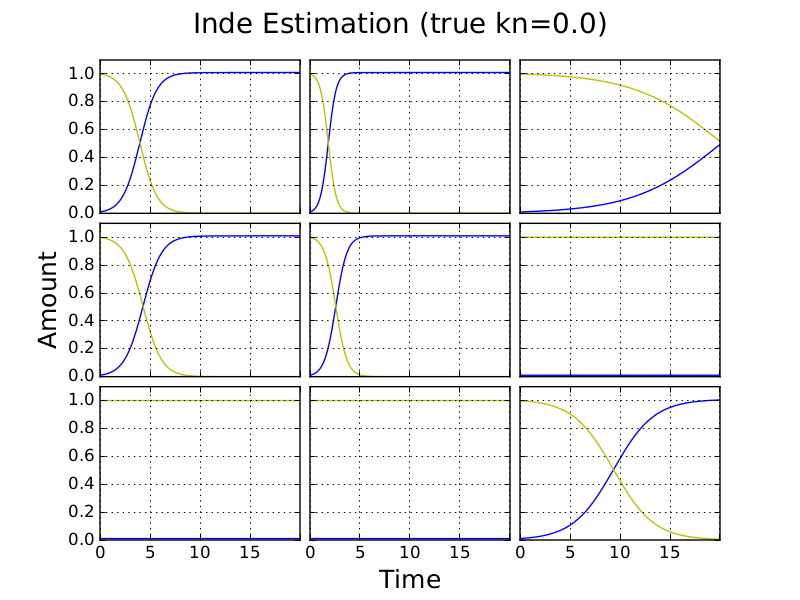
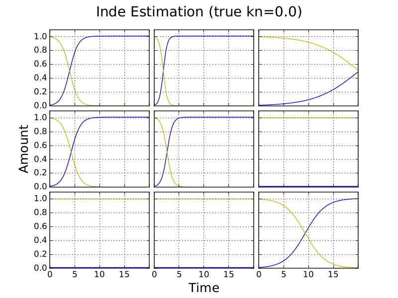
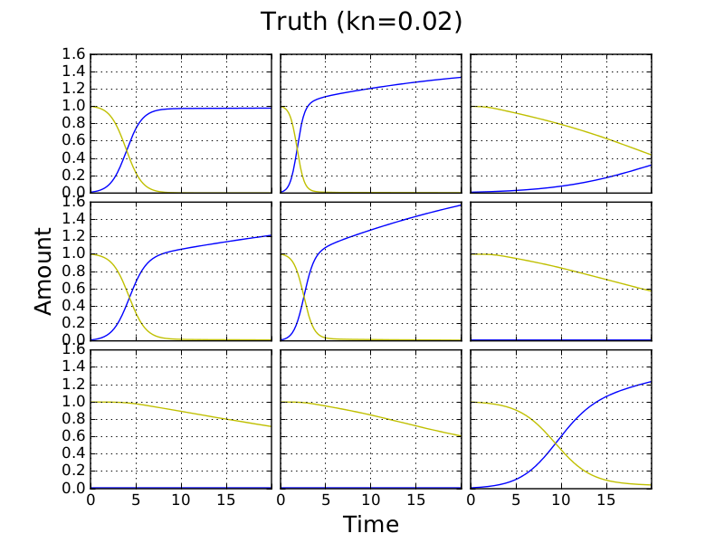
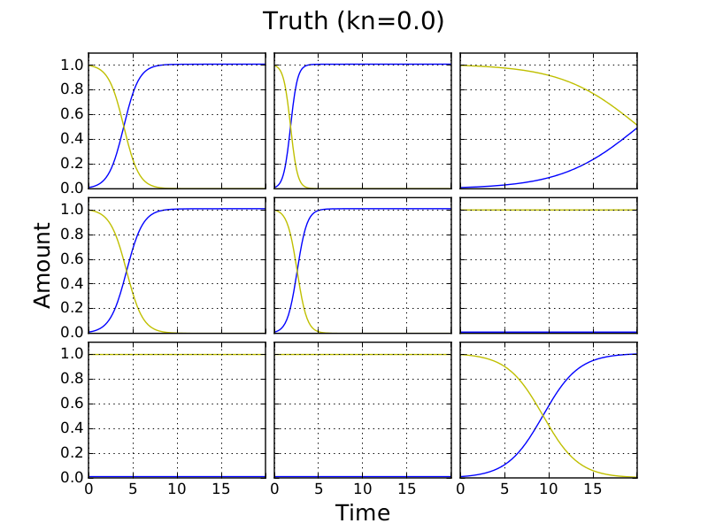
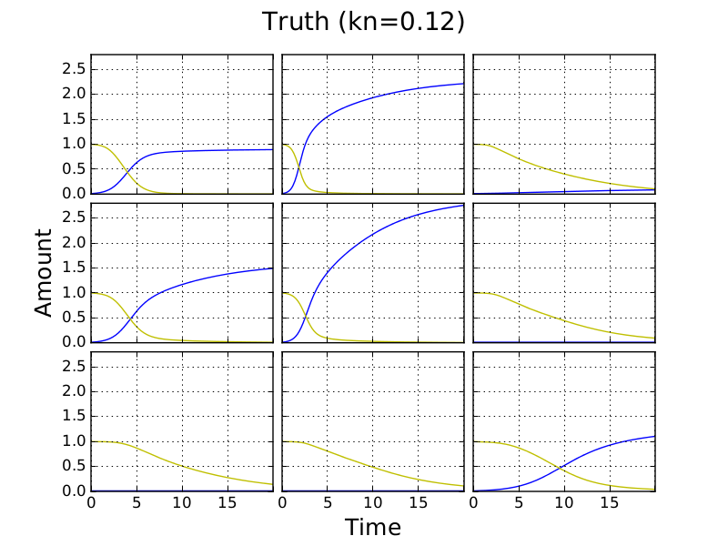
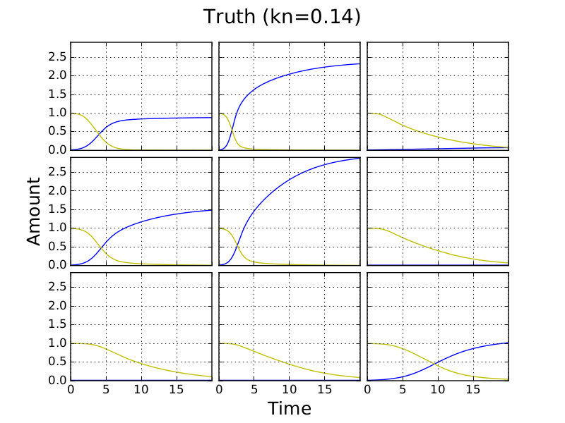
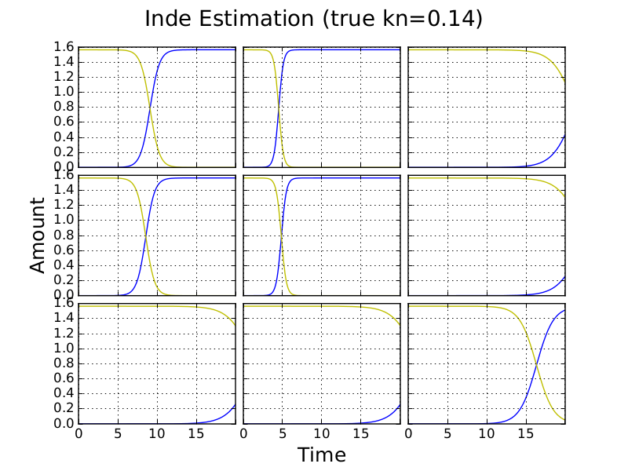
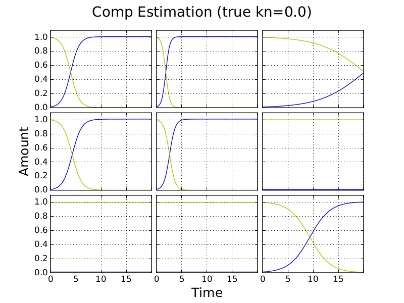
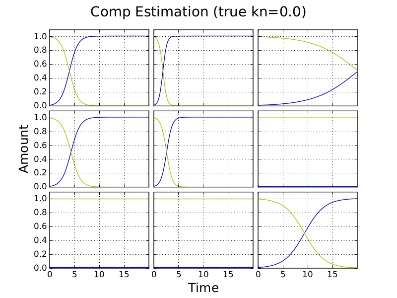

Using Independent Estimate as Initial Guess for Competition Fits
Outline
I study a competition model simulation of a 3x3 plate for which fitting of the competition model is inaccurate. I attempt to improve fits using independent model estimates of parameters as starting points for fits of the competition model. I vary the nutrient diffusion constant, kn, while keeping other parameteres fixed and observe the effect on fitting.
This suceeds at kn up to 0.12. Above this value, the independent solution is a local minimum.
Uniform starting points provide good fits for 0.02 <= kn <= 0.20. Other ranges were not stuidied except for the case kn=0.
In the Next post I will try several random sets of starting rs.
Uniform fit kn = 0
The below fits use a uniform initial parameter guess. True rate constants ~N(1,1); all rate constant guesses are of value 1.
 

The independent model provides a good fit to the competition model simulation but the competition model overestimates the values of kn.
Uniform starting points for other values of kn
For the same set of rate constant parameters, competition fits are good when using uniform guesses of growth constant and kn>0. On the other hand parameter estimates from independent fits are poor. Plots for the next kn value above zero and maximum simulated are shown below. Fits using itermediate kn values were simillarly good for the competition model and poor for the independent model.


inde r MAD 0.2846154083
comp r MAD 2.26275002272E-006
comp kn estimate 0.019999988


inde r MAD 0.7212100963
comp r MAD 2.60634831801E-006
comp kn estimate 0.1999999667
Using independent estimates as the starting point for competition fitting
This can be much faster when kn is small. For the rate constant parameters used, good parameter estimates were recovered for kn <= 0.12. Above this value the the competition fit was unable to escape the independent estimate minimum.
Importantly, we can fit the competition model to competition simulations with kn=0 using this method.
kn = 0

kn = 0.12


kn = 0.14

Using randomised starting points for independent and competition fitting
Below we use 3 different random sets of initial guesses in fits of the competition and independent models to competition simulations.
kn = 0

Below are three estimates using different random initial guesses. Only the first two provide good fits. These beat the uniform guess above and provide similar accuracy to fitting using the independent estimate as a start.
 

For other values of kn we found that uniform parameter guesses provided good fits. However, for other true parameters this may not be the case. We therefore look below at the performace of random parameter guesses and higher values of kn. The main drawback of this approach is that it increases the amount of computation time required. However, it may be neccessary to use it.
Discussion
This approach speeds up fitting becuase the starting point of competition fitting is already close to a minimum. Full plate fitting of the independent model remains slow becuase we are treating C(t=0) and N(t=0) as shared parameters (i.e. the same for each culture on the plate) and there is therefore only one less parameter in independent fitting than in competition fitting. It would be worth seeing if we can speed up fits by first treating C(t=0) and N(t=0) as independent for each culture, fitting with the independent model for each culture, and then using the results of these fits in a second round of independent fitting where C(t=0) and N(t=0) are shared. Independent estimates could then be used as starting points for competition fits. Results above suggest that this would work so long as kn is relatively small.
When it is not appropriate to use independent estimates as the starting pionts for competition estimates (i.e. when kn is relatively large), we may use the competition model to first fit small segments of a plate and use estimates from these fits as starting points for fitting of increasingly larger segments up to the plate level.
Comments